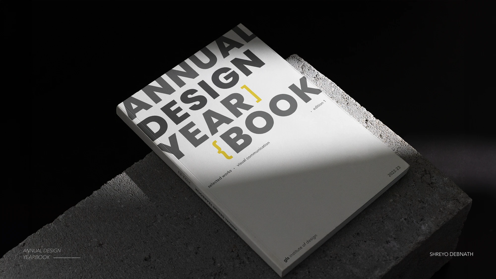
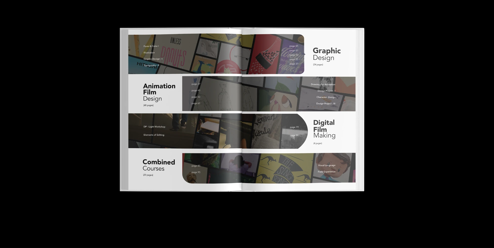
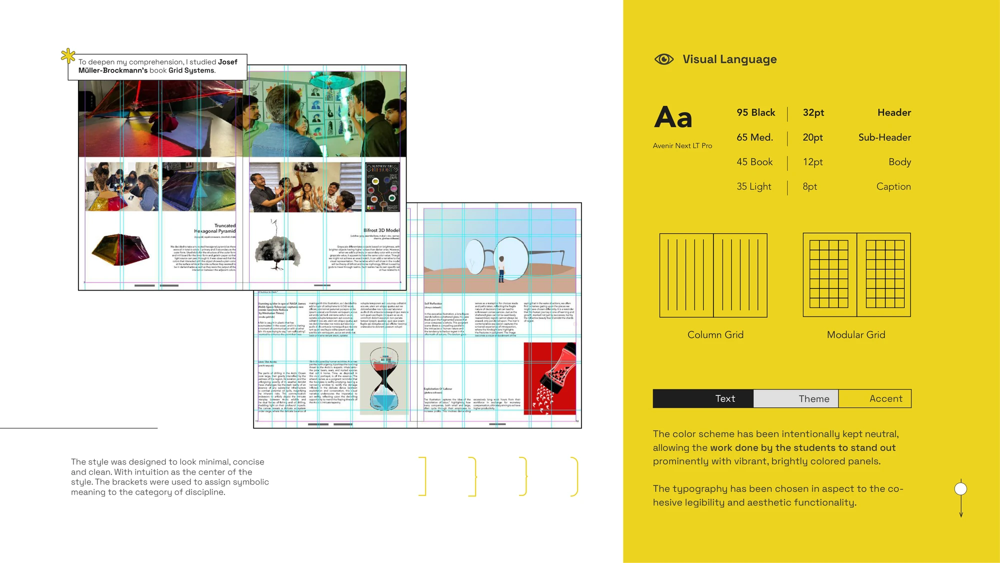
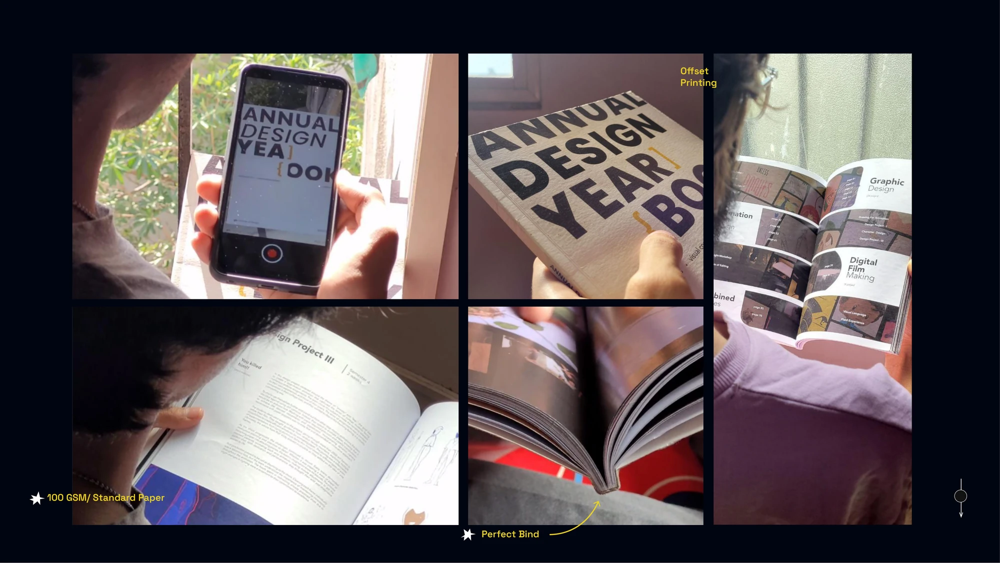
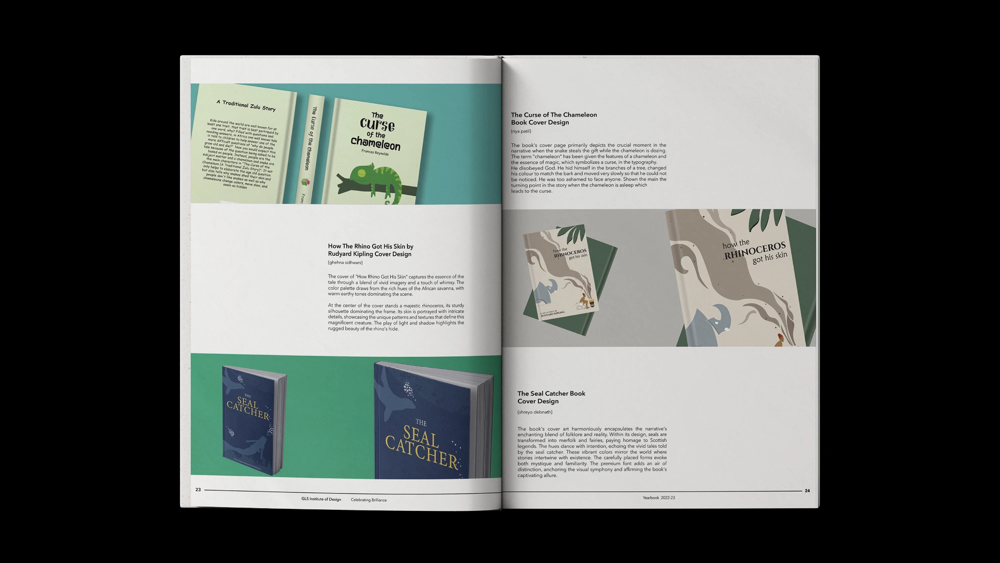
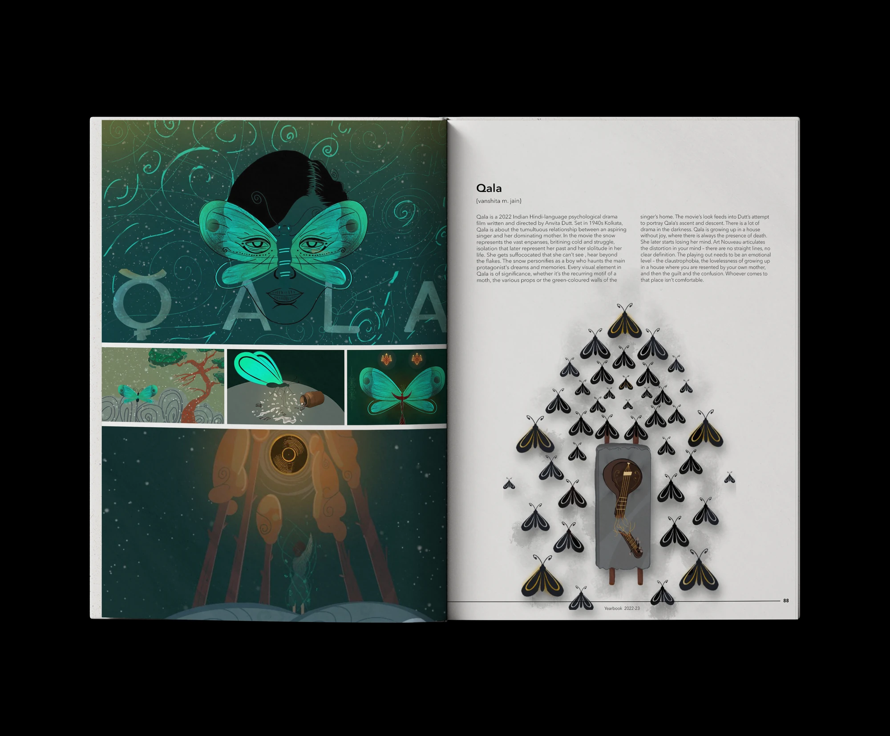
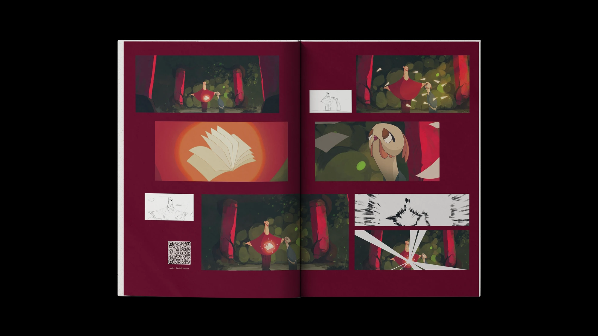
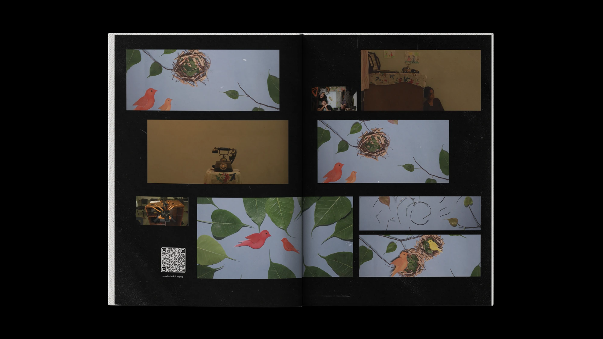
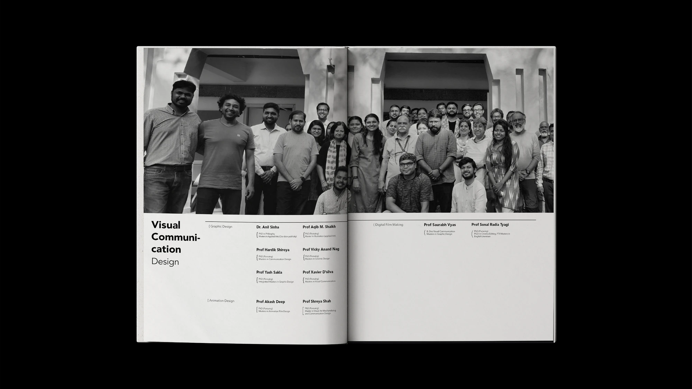

GLS Annual Yearbook
A printed annual yearbook and digital archive for GLS Institute of Design, with an augmented reality layer that opens extended content from the page.

Overview
A book that frames the students' work and stays out of its way.
Brief
The institute had no space, physical or digital, to showcase student and alumni achievements each year. That absence was the brief.
My part
Art direction, content editing and print production, all three at once.
Result
A printed yearbook distributed within the institute, documenting the full year's creative output across all departments.
Context
How can a book build meaning?
GLS Institute of Design lacked a dedicated space, physical or digital, to showcase student and alumni achievements annually. There was no cohesive platform to document patents, publications, awards, or the creative work produced across disciplines each year. That absence was the brief.
The project was to create an engaging and visually compelling annual yearbook and digital archive platform to capture, celebrate, document, and showcase the creative journey and accomplishments of GLS Institute of Design throughout the year. The book needed to serve as both a keepsake and a repository, a record that students and faculty could refer back to.

The contents spread: four disciplines as stepped bands.
Design system
The design system stayed quiet so the students' work could be loudest.
The visual language was built to be minimal, concise, and clean. The design system needed to stay quiet enough that the students' own work could be the loudest thing on every spread.
Grid
One grid that changes with the page.

The two grids on a 40 × 28 cm spread, and the cover lockup.
Spreads
A frame for work from every discipline.
Every spread was proofed and color-corrected before the final print run.

Illustration: a course spread on the modular grid.

Book cover design: three covers with their rationale.

Qala: a film study across a full spread.

Animation film: stills and storyboards, with a QR code to the film.

Digital film: stills on black, with a QR code.

The faculty spread.
AR layer
Scan a page, and the book keeps going.
An augmented reality layer was built using Artvive, allowing readers to scan specific pages and access additional content, video walkthroughs, process documentation, and extended project narratives, through their phone. This bridged the physical book with a digital archive.
Scanning the cover: the AR artwork blooms in.
The book opening to its half-title spread.
Outcome
A printed record.
The yearbook was printed and distributed within the institute. It documented the full year's creative output across all departments, serving as both a reference and a celebration of the work produced.
The AR layer gave the book a second life beyond print, allowing viewers to access extended content without adding page count. Studying Josef Müller-Brockmann's "Grid Systems" during the project deepened my understanding of how structure and white space work together to give content room to breathe.
Takeaways
What I took away.
- Print needs a different kind of restraint than screen. The book's job was to frame the students' work, not compete with it. Neutral typography and a quiet color system made the vibrant portfolio pieces feel intentional, not chaotic.
- Grid discipline makes a 100-page book feel like one object instead of a collection of unrelated spreads. The column-to-modular grid switch gave the layout flexibility without breaking consistency.
- AR added a digital layer without complicating the physical experience. The technology was invisible until the reader chose to engage with it.
- Decisions cascade across domains. Managing art direction, content editing, and print production simultaneously built a working understanding of that. A type change on page 12 can break the grid on page 40.